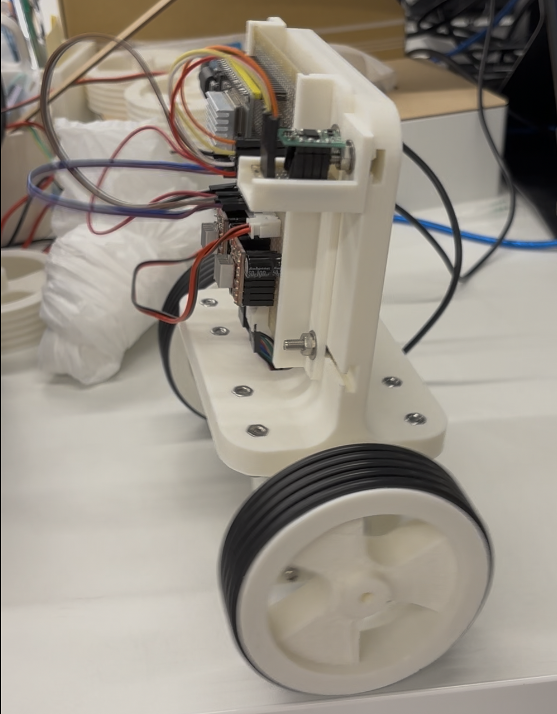
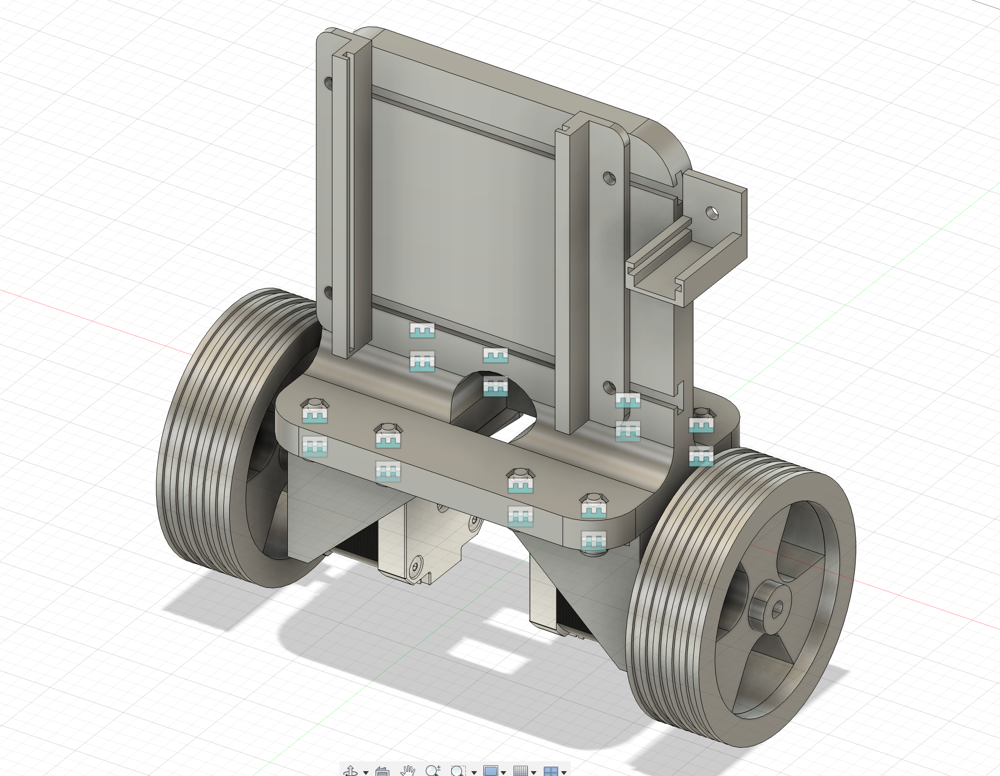
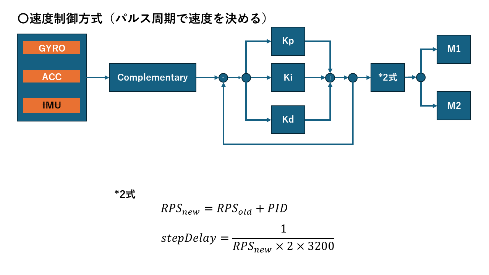

PID制御を習得したい！その①
PID制御を倒立振子の開発を通じて学ぶ

図1 開発中の倒立振子の図
この制作実績のレポートでは、倒立振子の開発を通じてPID制御の仕組みを学習している過程を記録する。現在、制御パラメータの調整や動作安定化に向けた実験を進めており、その内容を本レポートにまとめる。
PID制御とは
PID制御とは、比例（Proportional）・積分（Integral）・微分（Derivative）の3つの要素を組み合わせて行う制御方式である。 対象の状態（たとえば角度や速度など）を目標値に近づけるために、誤差をもとに制御量を計算する。
- P（比例）制御：誤差の大きさに応じて出力を調整する。応答が速いが、誤差が残ることがある。
- I（積分）制御：過去の誤差を蓄積して補正し、定常誤差をなくす働きを持つ。
- D（微分）制御：誤差の変化率を利用して、急激な変化を抑え、安定性を高める。
これら3つを組み合わせることで、速い応答と安定した制御の両立が可能となる。 倒立振子のように不安定なシステムを安定化させる代表的な手法として広く利用されている。
車体の設計
-

図2 CADの図 -

図3 開発中の倒立振子の図 -

図4 開発中の倒立振子の図
倒立振子の車体設計では、重心位置や支持点の配置が重要である。図2のCAD画像のように、前面を制御基板部、背面をバッテリ部として実装する想定で、重心を中心に寄せるように設計している。MCUはESPDev32E、モータドライバはA4988、9軸センサはBNO055を採用している。 また、車体の駆動部は2つのステッピングモータで駆動させている。ステッピングモータに取り付けられたタイヤは直径80mmで、滑り止めとして同サイズのOリングを設計した溝にはめ込んでいる。
制御ロジック
倒立振子の制御ロジックは、センサからの情報をもとにPID制御を行う。ジャイロセンサと加速度センサを用いて倒立振子の姿勢を検出し、そのフィードバックを基に制御信号を生成する。 また、ステッピングモータを使用するにはパルス信号の生成が必要である。そのため、センサのフィードバックを受けながら、モータの制御を実現できるタスクをそれぞれ独立して動作させることで、リアルタイム性を確保する必要がある。 今回の実験では、PID制御の出力を基にパルス周期の制御を行った。

図5 状態推移図
動作映像
検証動画では、ゲイン値をそれぞれ、Kp=20,Ki=10,Kd=5に設定して実験を行った。動作の考察として、ふらつきがまだ見られるため、ゲイン値の調整が課題となっている。また、バッテリをこの時点では実装できていないために、重心が中心に定まらずに動作が不安定となっている。今後は、バッテリを実装して、ゲイン値の調整を行いたい。
github repository